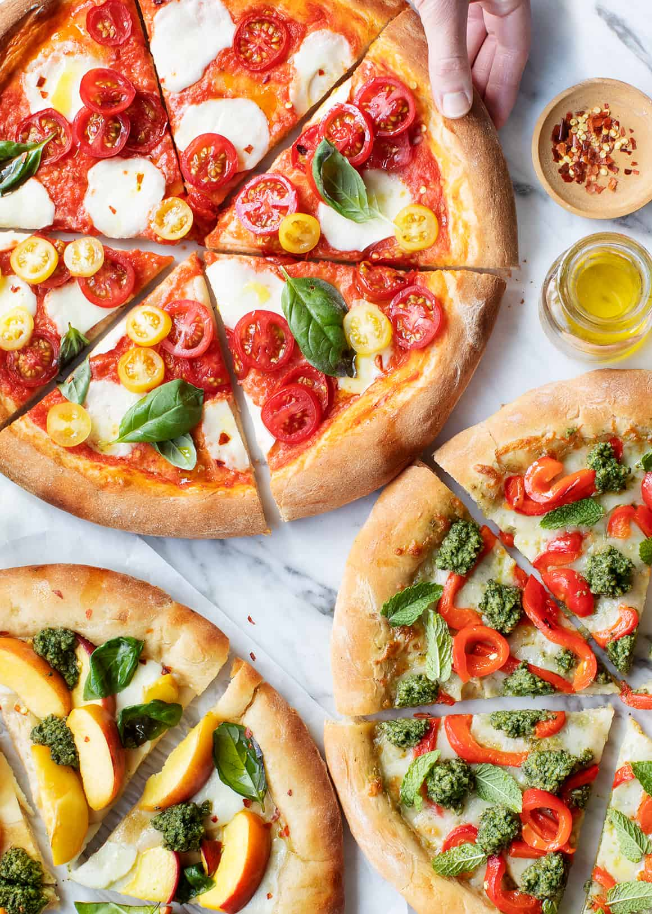

This is the Pizza Recipe

Assemble and Baking
Ingredients
- 1 cup (250g) pizza sauce (or crushed San Marzano tomatoes with a pinch of salt)
- 4 cups (454g) shredded or torn fresh mozzarella cheese
- Your favorite toppings (pepperoni, basil, mushrooms, etc.)
- Olive oil for brushing
Instructions
- Preheat the Oven: Crank your oven as high as it will go (ideally 240°C to 285°C / 475°F to 550°F). If using a pizza stone, let it preheat in the oven for at least 20 minutes.
- Stretch the Dough: Using your fingers, press and stretch the dough into your desired circle thickness, leaving a slightly thicker edge for the crust. Transfer to a lightly floured baking sheet or a pizza peel dusted with semolina flour.
- Top the Pizza: Brush the crust lightly with olive oil. Spread a thin layer of pizza sauce (don't over-sauce, or the crust will get soggy) and top with mozzarella and your favorite ingredients.
- Bake: Bake for 10 to 15 minutes, or until the cheese is bubbling, golden brown, and the crust is crisp.